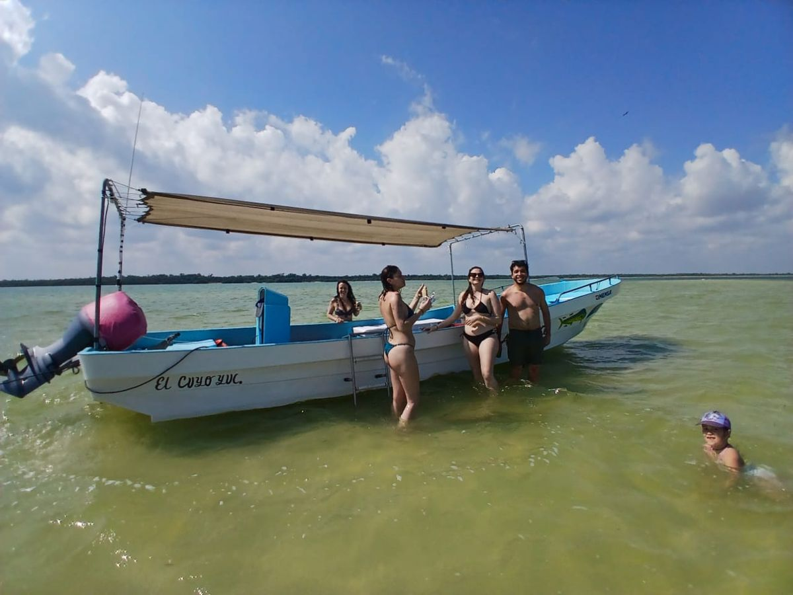
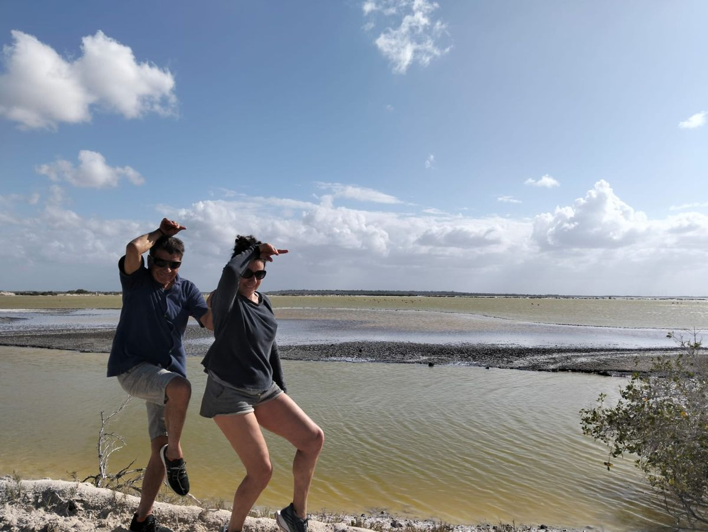

Descubre El Cuyo a tu manera.
Mar, naturaleza y experiencias auténticas en un rincón especial de Yucatán. Encuentra actividades y servicios locales y planea tu visita con atención cercana.
Experiencias y servicios
Elige una categoría, conoce los detalles y escríbenos para confirmar disponibilidad, precio final e inclusiones para tu fecha.


Experiencias locales, recuerdos que se quedan.
En Explora El Cuyo Tours queremos ayudarte a vivir lo mejor de nuestro rincón de Yucatán. Conectamos a nuestros visitantes con aventuras, actividades y servicios locales para que disfruten el mar, la naturaleza y la tranquilidad de nuestro pueblo.
Queremos que conozcas más que un destino: que te lleves una experiencia auténtica, cercana y memorable, siempre con respeto por nuestro entorno natural.
Misión
Facilitar experiencias y servicios locales en El Cuyo con información clara, atención amable y comunicación directa para ayudar a cada visitante a elegir el plan adecuado.
Visión
Ser un punto de referencia confiable para descubrir El Cuyo, fortaleciendo la conexión entre visitantes y proveedores locales y promoviendo el respeto por la comunidad y la naturaleza.
¿Cómo reservar?
Antes de realizar un pago, confirma por escrito los detalles de tu actividad y las condiciones aplicables.
Abre una actividad para consultar descripción, duración estimada, precio de referencia y condiciones.
Indica fecha, número de personas y dudas. Confirmaremos disponibilidad, proveedor, punto de encuentro e inclusiones.
Recibe el total, el depósito solicitado y la política de cambios o cancelación por escrito antes de enviar dinero.
¿No sabes qué experiencia elegir?
Cuéntanos tus fechas y qué te gustaría hacer en El Cuyo.